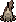

猛撞Take Down
- 屬性
- 一般
- 分類
- 物理
- 威力
- 90
- 命中
- 85%
- SP
- 40
- 冷卻
- 2.2 秒（物理組）
- 範圍
- 衝刺
- 距離
- 3 格
- 段數
- 1
- 前搖
- 0.6 秒
- 接觸
- 是
招式分類跟隨招式的 屬性 （第三世代規則，與火紅／葉綠相同）：火、水、草、電、超能力、冰、龍、惡屬性招式一律是特殊招式；其他屬性是物理招式（例外：分擔痛楚）。因此暗影球是物理招式，攀瀑是特殊招式。這是刻意設計，不是錯誤。
即時戰鬥效果
使用者承受造成傷害的 1/4 作為反作用力。
使用者衝向目標並打擊。
升級時學會
 卡蒂狗 Lv 25
卡蒂狗 Lv 25 小火馬 Lv 31
小火馬 Lv 31 烈焰馬 Lv 31
烈焰馬 Lv 31 小海獅 Lv 37
小海獅 Lv 37 白海獅 Lv 42
白海獅 Lv 42 獨角犀牛 Lv 43
獨角犀牛 Lv 43 鑽角犀獸 Lv 46
鑽角犀獸 Lv 46 肯泰羅 Lv 53
肯泰羅 Lv 53 伊布 Lv 42
伊布 Lv 42 化石翼龍 Lv 43
化石翼龍 Lv 43 咕咕 Lv 28貓頭夜鷹 Lv 33
咕咕 Lv 28貓頭夜鷹 Lv 33 燈籠魚 Lv 37
燈籠魚 Lv 37 電燈怪 Lv 43
電燈怪 Lv 43 榛果球 Lv 15
榛果球 Lv 15 佛烈托斯 Lv 15
佛烈托斯 Lv 15 土龍弟弟 Lv 41
土龍弟弟 Lv 41 布魯 Lv 43
布魯 Lv 43 布魯皇 Lv 49
布魯皇 Lv 49 千針魚 Lv 33
千針魚 Lv 33 赫拉克羅斯 Lv 37
赫拉克羅斯 Lv 37 小山豬 Lv 28
小山豬 Lv 28 長毛豬 Lv 28
長毛豬 Lv 28 巨翅飛魚 Lv 22
巨翅飛魚 Lv 22 小小象 Lv 25
小小象 Lv 25 驚角鹿 Lv 37
驚角鹿 Lv 37 水躍魚 Lv 28
水躍魚 Lv 28 沼躍魚 Lv 31
沼躍魚 Lv 31 巨沼怪 Lv 31
巨沼怪 Lv 31 土狼犬 Lv 33大狼犬 Lv 37
土狼犬 Lv 33大狼犬 Lv 37 可可多拉 Lv 25
可可多拉 Lv 25 可多拉 Lv 25
可多拉 Lv 25 波士可多拉 Lv 25
波士可多拉 Lv 25 利牙魚 Lv 31
利牙魚 Lv 31 呆火駝 Lv 29
呆火駝 Lv 29 噴火駝 Lv 29
噴火駝 Lv 29 青綿鳥 Lv 31
青綿鳥 Lv 31 七夕青鳥 Lv 31
七夕青鳥 Lv 31 風鈴鈴 Lv 17
風鈴鈴 Lv 17
古空棘魚 Lv 29 愛心魚 Lv 24
愛心魚 Lv 24 鐵啞鈴 Lv 1
鐵啞鈴 Lv 1 金屬怪 Lv 1
金屬怪 Lv 1 巨金怪 Lv 1
巨金怪 Lv 1 姆克兒 Lv 29
姆克兒 Lv 29 姆克鳥 Lv 33姆克鷹 Lv 33
姆克鳥 Lv 33姆克鷹 Lv 33 大牙狸 Lv 33
大牙狸 Lv 33 大尾狸 Lv 38
大尾狸 Lv 38 頭蓋龍 Lv 15
頭蓋龍 Lv 15 戰槌龍 Lv 15
戰槌龍 Lv 15 盾甲龍 Lv 15
盾甲龍 Lv 15 護城龍 Lv 15
護城龍 Lv 15 櫻花寶 Lv 31
櫻花寶 Lv 31 櫻花兒 Lv 35
櫻花兒 Lv 35 圓陸鯊 Lv 15
圓陸鯊 Lv 15 尖牙陸鯊 Lv 15
尖牙陸鯊 Lv 15 烈咬陸鯊 Lv 15
烈咬陸鯊 Lv 15 沙河馬 Lv 19
沙河馬 Lv 19 河馬獸 Lv 19
河馬獸 Lv 19 小球飛魚 Lv 31
小球飛魚 Lv 31 超甲狂犀 Lv 33
超甲狂犀 Lv 33 象牙豬 Lv 32
象牙豬 Lv 32招式光碟
 一般屬性招式光碟 ・稀有（每打倒一隻該屬性寶可夢 0.3%，由 20 個招式分配）
一般屬性招式光碟 ・稀有（每打倒一隻該屬性寶可夢 0.3%，由 20 個招式分配）
可以教會 469 隻寶可夢：遊戲中的每一隻都能學（一般屬性招式不限屬性）。